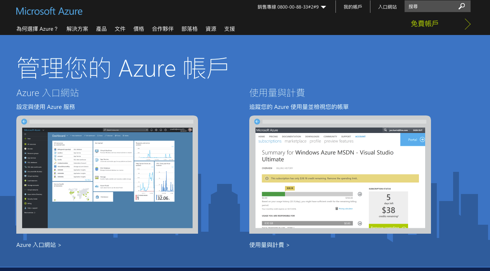
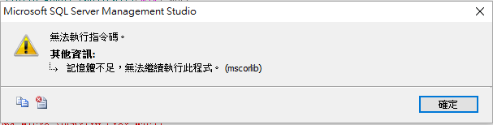

因緣際會下，拿到了 Transact-SQL (又稱 T-SQL )的一個腳本，因為之前沒有使用過，所以在跑這個腳本時遇到很多小問題，一開始是想以Mac去嘗試，但是爬了一下文章， T-SQL 是在 Microsoft SQL Server 和 Sybase SQL Server 上的 ANSI SQL 實作，所以，以下是由 Windows 環境下去解釋。
再跑這個腳本前，自己有先在網路查詢有關於T-SQL的一些文章，在維基百科解釋，與網路上的幾篇文章下，我發現我必須先做以下這兩個前置作業。
首先去 Microsoft Azure ，申請一個免費帳戶，這邊需要註冊一個 Microsoft 帳戶，然後他的訂用帳戶是Free Trial的免費帳戶，這個帳戶金額有台幣6300的額度可以用，目前這個額度對我來說是夠用的，申請完後，你可以去 Azure 的入口網站。

進去後可以照著微軟提供的文件去一步一步去建立我們的資料庫，這個文件分步驟教學，很詳細的介紹，可以參考，至於名稱可以依自己喜好命名。他也有提醒要記得設定防火牆，因為這在之後會影響到是否有權限去查詢我們的資料庫。
再來我去下載 SQL Server Management Studio ，這個是 SQL Server 預設的資料庫管理工具，隨著 SQL Server 安裝時勾選用戶端的選項而安裝。因為有 T-SQL 的腳本，所以再將資料匯入我們的 SQL Server 會比較方便，這邊也有微軟提供的使用 SQL Server Management Studio (SSMS) 建立對 Azure SQL Database 伺服器的連線，這是在開啟 SQL Server Management Studio 後，我們需要先去與伺服器的連線。
好了，兩個前置作業都完成了，那是不是直接匯入我們的腳本就可以跑，錯！！！ 在這邊我遇到三個問題。
設定防火牆問題，所以這個很重要，要記得設定防火牆，允許我們有權限去查詢我們的資料庫。
記得先熟悉 T-SQL 的語法，這邊有 T-SQL 的教學課程，我在這邊出現的錯誤是，找不到我的資料庫，最後再腳本檔中發現他並無下面的指令，這個是建立資料庫的語法。
CREATE DATABASE TestData
GO以上兩個錯誤解決後，最後發現記憶體不足，所以無法執行檔案。  爬文發現解決的方式，可以下這個指令：
sqlcmd -S PcName\SQLEXPRESS -U sa -P password -d DataBaseName -i C:\Script.sql -o C:\log.txt
- -S: 此處為在 SSMS 裡寫在「伺服器名稱」的值
- -U: 此處為在 SSMS 裡寫在「登入」的值
- -P: 此處為在 SSMS 裡寫在「密碼」的值
- -i: 匯入的腳本檔，也就是剛才使用資料庫發行精靈 (SqlPubWiz.exe) 產生出來的檔案
- -o: 匯出的檔案，內容大致是平常在 SSMS 裡執行 SQL 語法時會出現在「訊息」窗格裡的內容（我是覺得這批匯入所產生的 log，和我在 SSMS 執行時看到的訊息量不太一樣）
下這筆指令後，發現他噴錯，內容是說腳本的內容有錯誤，這讓我有點不知所措。 最後，我仍相信腳本應該不會有問題，所以我還是嘗試在SSMS做查詢的動作，去嘗試寫入資料，在 SSMS 上操作是正確的，所以我就去切腳本的檔案，一步一步去跑切出來了檔案，之後很順利的將腳本的檔案匯入我們的 SQL Server 。 內容總量大約是 2.6 萬筆，資料庫發行精靈產生出的 SQL 腳本大約有 196.2 MB。